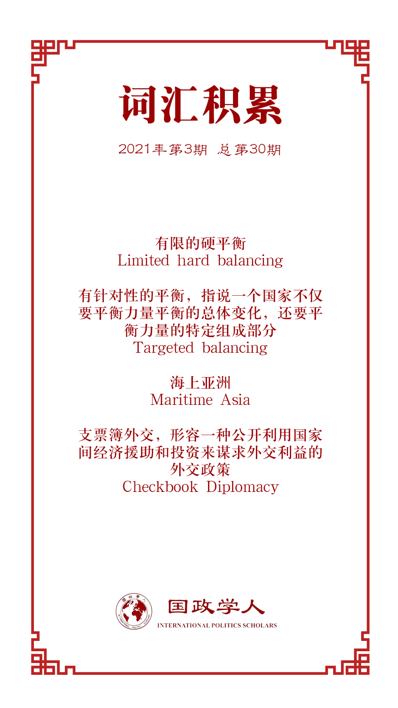

收录于合集

作品简介
【作者】 Takuya Matsuda 伦敦国王学院博士候选人，研究兴趣为大国关系和同盟政治。
【编译】 黎开朗 （国政学人编译员，立命馆大学国际关系学院）
【校对】 朱家羲，朱忻博
【审核】 晋玉
【排版】 高辉，韩心蕊
【美编 】方引弓
【来源】 Takuya Matsuda (2020) Explaining Japan’s post-Cold War security policy trajectory: maritime realism, Australian Journal of International Affairs , 74:6, 687-703,
DOI:10.1080/10357718.2020.1782346
【归档】 《国际关系前沿》2021年第3期，总第30期。
期刊简介
Australian Journal of International Affairs，成立于1946年，由澳大利亚国际事务研究所负责编辑、出版。该期刊主要关注以亚太地区(但不限于)为主的国际政治、社会、经济和法律问题的学术研究，影响因子为1.171。
日本后冷战时期的安保政策评述
Explaining Japan’s post-Cold War security policy trajectory:
maritime realism
Takuya Matsuda
编者按
本中的maritime虽然通常被译为“海事”，但译者仍然译为“海洋”。鉴于本文引用了高坂正尧的著作《海洋国家日本的构想》（日语：海洋国家日本の構想），而本文作者把该书译为了“Japan as a maritime state”，再加上maritime包含“海的”之意，故本文仍采用“海洋现实主义”的译法，而非“海事现实主义”。
内容提要
安倍政府下日本的安保政策引发了许多关于 日本作为安全行为体变化的讨论 。本文确立了对日本安保政策的轨道有影响的两个独立变量，即对势力均衡的计算（balance of power calculations）和海上公域的安全准入（secure access to the maritime commons）。本文作者认为最好把日本的战略描述为海洋现实主义（maritime realism）,一种利用海洋战略的原则来融合自由国际主义和现实主义的元素的看法。随着各方在印太海域日益激烈的争逐，日本不仅积极推动美国对于“海上亚洲”（maritime Asia）的承诺，同时也注重扩大其在海洋安全方面的作用。尽管东京的安保策略与结构现实主义的预测一致，但考虑到海军角色的特殊性，这些预测也经常由自由主义加以诠释。本文通过结合国际关系和战略学的概念进一步推动了有关同盟政治和大国竞争方面的理论争论，同时充分揭示了冷战之后日本安保政策的变化。
文章导读
01
引言
在安倍首相的领导下，日本的安保政策发生了一系列变化。 那么是什么导致了安倍政府下日本安保政策的转变？ 这些变化又会如何影响作为一支军事力量的日本的未来道路？ 对于这些问题的看法，目前主要分为两派。现实主义一派认为，这些变化是对同盟管理的要求，是对军事力量日益强大的中国以及对朝鲜的恐惧所导致的；自由主义一派的政府官员则更加倾向于用价值观这样的自由国际主义话语来解释日本安保政策的变化。
本文的目的在于引入海洋现实主义这一概念调和上述两派的分歧。 海洋现实主义阐明了“日本版的现实政治”（Japanese version of Realpolitik），即考虑了地缘政治显示，又照顾到了日本作为贸易国家对海上航道的关心。 日本后冷战时期的战略旨在维护美国海军在亚洲的主导地位，积极推动建立以坚持海上法制为核心的海上秩序，并一直在力图促进美国对亚洲的安全承诺，以确保日本在进入海上公域时不受干扰。
本文首先回顾了已有的文献，以突出解释日本后冷战时期安全路径的不同，之后通过引入海洋现实主义的概念确立了文章的分析框架。接着，进一步对推动日本安全政策的两大主要因素，即对均衡考量和海上公域的安全准入加以验证。最后，分析了自冷战结束以来日本的外交政策轨迹，并提出了对未来研究的一些启示。
02
注意分歧：在解释日本安保政策方面的理论分歧
在过去，日本受到吉田主义（Yoshida doctrine）的影响，专注于战后重建，追求经济繁荣，同时在军事上依赖美国，所以有的学者也将其理解为“商人的国际政治观”。
自冷战结束以来，有许多学者围绕着是否日本的安保政策已经从根本上改变了吉田主义展开了一系列讨论。理查德·塞缪尔（Richard Samuel）认为尽管日本的安保政策仍是在美日同盟这一框架里逐渐形成的，但日本在国际安全上正在逐渐扮演更重要的角色。在吉田主义的核心观念依旧在日本延续的大背景之下，一些学者对近期的安保改革提出了更多的质疑，认为坚守吉田主义的原则和规范阻碍了以军事化为主的安保政策的转变。此外，一些学者把这种现象描述为演化（evolutionary），还有一些学者认为近期的安保改革相比较之前的安保态势而言是更为激进的转变。另一方面，建构主义者认为冷战之后的结构性变化不会导致日本安保政策的重大突破，而是日本的国内结构和规范推动了决策进程。有学者的分析指出日本民众的反军国主义情绪依旧是日本安保政策轨道中的一个干预变量，并且很难说服日本民众去改变目前单方面的和平主义。
目前已有两种观点用于理解同盟政治和后冷战时期日本安保政策的轨道。
1. 自由国际主义
日本，尤其美日同盟是“亚太地区综合合作安全秩序”的一部分, 展现了“势力均衡和一个基于群体的安全秩序”的融合。在冷战结束以后，在美国主导的合作与自由秩序之下，日本不断扩大其在安全领域的角色为若干政策目标服务。并且美国也承认一个更加积极的日本对区域内的势力均衡是十分重要的，但日本作为军国主义大国的复兴也同样需要受到遏制。从以上的观察来看，日本安保政策的改革预示着日本将试图在维护自由国际秩序方面发挥更大的作用。
2. 现实主义
日本的安保政策被看作是企图遏制中国崛起的修正主义者的做法。这样的观点不仅被那些对日本积极的安全政策持谨慎态度的人所认同，也被那些为美国在东亚提出极简主义大战略的人所认同。
此外，有关上个世纪90年代以后的亚洲海洋的解释也体现了自由和现实主义的分歧。作者以中国对美日同盟关系看法的变化为例对其观点加以诠释。鉴于战争历史，中国把日本视为一个侵略者，所以中国刚开始其实对于美日同盟是持欢迎态度的，因为这可以抑制日本重新成为一个军国主义国家。然而中国开始怀疑在印太地区美国主导的安保体系的不断发展，认为这是“华盛顿过时、零和和冷战思维的体现”，旨在遏制中国的崛起。
最后，现实主义和自由国际主义特征之间的模糊性在安保体系的发展中也很明显。意图限制美国的同盟国以双边关系为基础的轴辐式体系（hub-and-spokes system），正在转变为一个多边的安保网络，而美国的盟友在逐渐承担更多的区域安全责任。然而这些想法相似的国家之间的合作尚未形成正式的联盟，所以这种现象最好被理解为有限的硬平衡（limited hard balancing）。
总的来看，在解释日本安保政策的时候，现实主义和自由主义的解释之间有着明显的分歧。单纯的用结构现实主义者的观点来解释冷战后的日本安保政策无法覆盖到其自由国际主义的一面。
03
设立一个框架： 什么是海洋现实主义？
在正式讨论海洋现实主义之前，作者首先指出了学界目前缺乏理论方法来解释印太地区安全环境轨道的原因，即目前的国际关系理论主要源于从欧洲大陆获取的经验主义案例，难以把势力均衡理论应用于不同的地缘政治环境。作者同时也点明上述理论的分歧来源于海军的多功能性，包括军事和外交职能，以及与治理和稳定有关的警察职能。
海洋现实主义遵循结构现实主义的基本前提，同时加入了对海军这一特殊角色的关注。 均势的计算，以及结构的变化促使日本把军事机构整合到其国家战略之中，巩固日本国家安全决策机构，以及越来越愿意将军事力量视为国家力量的主要组成部分，都与这些理论主张产生了共鸣。此外，日本的安保政策还发展出了一种更加强烈的，以海洋为中心的战略来让日本重新适应日益不稳定的国际体系。因为海上贸易对各国财富和实力的深远影响,所以一个可以安全进入海洋的通道是至关重要的。中日两国的领土争端对整体海洋空间的大国竞争和日本的安保政策都有着重大的影响，日本对这些关键水域的担忧，影响了其作为海上强国的地位的提升。上述观察也表明， 海洋现实主义是一种“有针对性的平衡”（targeted balancing），也就是说一个国家不仅要平衡力量平衡的总体变化，还要平衡力量的特定组成部分，即海军力量。
另一方面， 海洋现实主义也包括治理的方面，突出强调价值观和法治 。海军有三个主要功能：外交，维持治安，军事角色。海军的外交和安全角色的作用包括了控制海洋，力量投射和威慑，维护治安的角色包括了法律的实施和治理。随着冷战的结束，海军的角色相比以往更注重维护和平和推动治理的功能。因此美国海军的首要地位对于日本而言也是十分重要。鉴于海军的多功能性，海军被视为“塑造一个国家对国际安全的贡献和世界地位的治国之道的关键工具”。 在一个海上体系中，拥有足够的军事力量是证明可信性和决心最好的方式，海军的主导地位表明了一个领先的海上强国决心，这鼓励志同道合的海上国家与领先的强国结盟。 海洋现实主义对美日同盟之间的发展也给出了合理解释。虽然单极结构使得国家间的首要战略目标很难相容，然而中国的海洋扩张使得两国的首要战略目标能够保持相容，并最终带来美日同盟关系的不断发展。
总的来看，海军在海洋领域扮演着多种角色，不仅是大国竞争，还包括促进与自由国际主义理想共鸣的海洋治理。因此，一个海洋大国在平衡各方力量的同时，也参与了有助于加强海洋秩序法治的行动。这些海洋现实主义国家特有的特征，推动了自冷战结束以来日本外交政策的发展。
04
日本国家安全考量的组成部分
a）对地区均势的考量
均势对于印太地区的稳定而言非常重要，为此需要日本在提高其国力的同时，加强与美国的同盟关系。为了理解日本在地区均势中的角色，需要重新回到二战刚结束之时。日本的无条件投降和其泛亚洲帝国的崩溃给这个动荡的地区造成了巨大的权力真空。而在当时就有许多美国战略家注意到了日本在地区均势中的地缘政治权重，他们为美国的政策提供了政策依据，最终导致了美日同盟的形成。日本决策者也同样注意到了该国的战略地位。早在冷战时期，日本的国防政策中就有“基盘防卫力的构想”(kibanteki boeiryoku kōsō)，旨在让日本拥有最基本的防御能力,这样日本就不会成为一个权力真空从而给地区带来不稳定。而在冷战结束后，出于对美国可能减少其在该地区的军事存在感的考虑，日本同澳大利亚发展了更紧密的防务关系。
b）印度-太平洋海上公域的准入
畅通的海上通道对日本的国家安全至关重要。而早在半个世纪以前，高坂正尧就从现实主义者的角度强调了日本接受自己作为海洋国家的重要性。然而他更关注海上空间对日本作为一个贸易国的重要作用，而没有考虑海上安全事务。但他的观点依旧为关于随后日本海上航道防御的辩论和加强美日同盟提供了依据。因为为了海上航道的防御而提高海军的作战能力更容易与日本作为贸易国家的特征相联系这一步骤既合理又简单。
自从冷战之后，日本对“海洋国家”的追求已成为其作为具有国际主义意识的国家成为国际安全的积极参与者和贡献者的代名词。经过多年来，日本作为海洋国家的能力得到提高，使其转变为了地区安全提供者的角色。此外，一些政策文件也表明日本东京希望生活在美国霸权下，作为地区秩序的基础。而日本追求海洋大国的想法也在东京提出的一系列外交倡议中被体现出来，并且通过海上外交致力于地区安全的承诺也强调了这一点。
05
冷战后日本的外交政策： 追求一个新的角色
作者在此回顾了冷战后日本安保政策调整的过程。两极格局终结后日本对于自身定位的迷茫和海湾战争中日本的 “支票簿外交”（Checkbook Diplomacy）分别两次打击了日本。而安倍政府下日本越来越主动的安保政策，可以被看作是冷战结束以来日本寻求其在国际社会中发挥作用的高潮。冷战的结束使得日本从一个被动的国家转变为积极主动的贡献国际秩序的角色。上世纪90年代初期，日本就开始寻求贡献冷战后国际秩序的方法，比如1993年派遣自卫队参加联合国维和部队在柬埔寨的行动就是一个典型的例子。
另一方面，朝鲜半岛和台湾海峡发生的一系列危机促使了 关于同盟在应对这些区域危机中的角色和重新定义后冷战时期同盟关系的讨论 。约瑟夫·奈（Joseph Nye）在其报告中把驻日美军称为“致力于稳定的力量”。1996美日同盟被重新定义为“面向21世纪的同盟”，进一步扩大了同盟的范围，涉及了在日本周边地区突发事件的双边合作，并且阐述了捍卫双方自由和民主作为双方共同价值的重要性。随后的一项象征性的政策倡议“自由与繁荣之弧”(Jiyū to Hanei no Ko)，也表明日本越来越多的引用共同价值观并把战略思维融入其外交政策当中。新的外交政策倡议寻求建立一个新的战略框架，使具有共同价值观的民主国家聚集在一起。与此同时，日本防卫省在2010年初开始明确提到有关海上安全问题，强调日本“贸易立国”的国策以及海洋安全和国际秩序对其国家繁荣的重要性。
自上世纪90年代以来，日本开始追求并塑造其在国际安全领域的角色，使日本能够发挥更大的作用。而这种倾向在安倍政府时期更为明显，特别是美国领导的不确定性，促使了日本不仅积极投资于自由国际秩序，而且积极投资于自己的防御能力。
03
结论
本文作者认为海洋现实主义在解决日本安保政策的模糊性方面发挥了重要作用，为未来研究大国关系和同盟政治提供了路径，也有助于理论的发展。首先它阐明了如何整合战略研究的地理因素，如海军的作用，可能有助于推进现有的国际关系理论，特别是结构现实主义理论。此外，基于海洋现实主义理论的理论发展对于理解主要发生在亚洲海洋地区的当代大国竞争至关重要，海洋现实主义提供了一个理论框架来探讨国家之前互相制衡的本质，这有助于更新现有的关于同盟政治和大国关系理论。最后，海洋现实主义揭示了在大国竞争下，保持全面视角来制定国家总体战略时所面临的挑战。对海上安全的关注超过了其他领域，但实际上其他领域也有可能会影响整体的大国竞争，比如美国的两个盟友日本和韩国之间的不和会削弱其同盟对竞争者的威慑，安倍首相为了交涉北方四岛的归还问题而重新俄罗斯接近也给了其打击美日同盟的可乘之机。虽然海上安全在大国政治中的决定性作用是显而易见的，但它并不排除其他领域成为大国竞争的关键舞台。
译者评述
学界围绕安倍时期安保政策的一系列变化一直争论不休。作为日本目前为止在任时间最长的首相，安倍首相任期内的安保政策对日本有深远的影响。因此，全面的理解后冷战时期，尤其是安倍政府的安保政策的变化对于长期研究日本的安保政策来讲是极为重要的。通过分析现有的文献，作者认为现实主义和自由国际主义已成为解释该问题的主要力量并总结出两派的观点。作者认为单从这两派观点中的任何一派去分析冷战后日本的安保政策的变化是不完整的。而作者则试图提出了海洋现实主义这一理论框架来调和不同看法的分歧，并提供一个更加全面的看待日本安保政策变化的视角。这是本文最大的贡献。
海洋现实主义作为结构现实主义的“海洋升级版”，在其原有基础之上加入了海军这一要素，而这源于海军的多功能性。 正如文中所说，海军在现实主义层面体现为其军事职能，在自由主义层面体现为其参与地区治理和维护地区稳定的职能。然而海军这一关键要素的加入，也创造了海洋现实主义这一理论框架本身的局限性，即而更适用于像日本这样以“海洋国家”身份自居的国家。此外，还有一个值得关注的问题是，作者认为在海洋体系之下，国家更倾向于站在拥有最强大海军的国家一边并与之结盟。这一点与传统欧洲大陆的均势截然不同，各国更加倾向于制衡彼此以避免欧洲大陆出现一个比其他国家更强大的国家。对此作者只是简单的认为解释传统欧洲大陆的均势难以解释其他诸如海洋空间这样的复杂地缘政治环境。然而译者则认为除了海洋这一地缘政治因素，诸如意识形态，美日同盟这样的同盟关系等，在传统欧洲大陆鲜见的因素，也会对今日的国家行为造成影响。最后是作者在本文中过于强调冷战后地缘政治环境的变化，即两极格局的瓦解以及中国的崛起，而忽视了日本作为一个“非正常国家”想要变成“正常国家”的主观能动性。例如，南洋理工大学的Bhubhindar Singh教授就把日本冷战后安保政策的改变看作是日本正在走向重回正常国家的道路，并且指出在上个世纪末开始日本内部重新审视和平宪法的呼声越来越高，神户地震和东京沙林毒气事件等日本国内事件都使日本政府和社会开始意识到日本对于处理安全威胁的无能，进而使得日本开始重新审视以前的国防政策。
译者认为作者提出的海洋现实主义忽视了日本追求成为“正常国家”的主观能动性的根本原因在于海洋现实主义的底层逻辑是基于结构现实主义。结构现实主义重视的是国际体系中的权力分配，认为国家在功能上并不存在差别，并且在华尔兹对于结构的定义中也可以看出单元属性中的许多要素被结构现实主义所忽略掉了。基于结构现实主义这一基本逻辑，在分析对外政策方面，进攻现实主义主要优先考虑体系自变量，防御性现实主义相比前者更加柔和，但其本身还是一个结构性理论。相比前两者而言，新古典现实主义在分析对外政策时，同时融入了外部因素和内部的因素，新古典现实主义者虽然也认为相对物质实力看作为主要的变量，但他们同时指出物质实力与对外政策之间需要一个中介变量来解释体系压力是如何被转化的。例如辽宁大学的王铁军教授就运用了新古典现实主义的理论分析框架来分析平成时期日本防卫政策的变化，选取了体制机制，军力结构这两个普遍要素，以及日美安保体制和安保法制这两个特殊要素，运用四个要素来总的分析了防卫政策的变化。山东大学的杨鲁慧教授同样选择了新古典现实主义的理论框架来说明后冷战时期日本海权防卫战略的转型，不仅指出了国际体系的变化和日本地缘位置上的脆弱性，即对海洋通道的极大依赖的两个因素；还指出了日本国内政治结构的变化
日本国内新保守主义势力完全控制了政权，使得日本“国家正常化”的步伐加快，以及由于日本经济持续低迷引发的右翼民族主义的泛滥，进一步推动了日本扩张性海洋政策逐步走向成熟。 因此从理论框架的全面性而言，新古典现实主义在分析日本安保政策变化时，在考虑因素方面比海洋现实主义更为全面。
最后，相比较日本而言，中国的海洋国家属性并没有那么强。相较日本而言，中国由于海上地理条件，历史传统等诸多因素，至今缺乏一个全面的海洋发展战略；而日本的海洋战略则从明治时期后期开始起步，历史较为悠久，并且日本作为岛国，综合且全面的海洋政策对于日本而言至关重要。这也间接导致了过去两国海上力量的对比呈现出日强中弱的局面。但近年来随着中国整体国力的不断提升，加强了对海军的建设使得中日海军力量逐渐呈现出中强日弱的局面，本文作者也在其其他文章里指出近年中日海军力量不平衡的现象。如今的世界正值百年未有之大变局，发展一个越来越强大的海军对于中国在大变局中坚定捍卫自己的国家权益和维护和平有着重大的意义。同时，随着日本继续突破已有海军限制的可能，中日双方如何做好彼此的沟通避免军事上的摩擦，基于海军治理属性如何展开更多的海洋治理方面的合作将成为两国未来需要面对问题。
参考文献
[1]SINGH, B. (2002). Japan’s Post-Cold War Security Policy: Bringing Back the Normal State. Contemporary Southeast Asi a, 24(1) , 82-105. Retrieved from http://www.jstor.org/stable/25798581
[2]王帆，曲博：《国际关系理论 思想，范式与命题》，北京：世界知识出版社2013年版，120-127页。
[3]Rose, G. (1998) ‘Neoclasscial Realism and Theories of Foreign Policy’, World Politics, 51(1) , pp. 144-172
[4]王铁军：《从新古典现实主义看平成时代日本的防卫政策变化——兼论日本的和平路线能坚持多久？》，载《日本学刊》2020年第1期。
[5]杨鲁慧，陈祥军：《后冷战时期日本海权防卫战略的转型以及对中国的影响》，载《上海行政学院学报》2017年第18卷第1期。
[6]侯昂妤：《“海洋强国”与“海洋立国”：21世纪中日海权思想比较》，载《亚太安全与海洋研究》2017年第三期，42-52页。
[7]Matsuda, T. (2020). _How Maritime Realism Explains Japanese Security Policy
- Tokyo Review_. Retrieved from
https://www.tokyoreview.net/2020/09/japan-as-a-maritime-realist-state- explaining-japans-security-policy/
词汇整理

文章观点不代表本平台观点，本平台评译分享的文章均出于专业学习之用, 不以任何盈利为目的，内容主要呈现对原文的介绍，原文内容请通过各高校购买的数据库自行下载。
好好学习，天天“在看”
国政学人
支持学术公益与知识传播
微信扫一扫赞赏作者 __赞赏
已喜欢，对作者说句悄悄话
取消 __
发送给作者
发送
最多40字，当前共字
上一页 1/3 下一页
长按二维码向我转账
支持学术公益与知识传播
受苹果公司新规定影响，微信 iOS 版的赞赏功能被关闭，可通过二维码转账支持公众号。